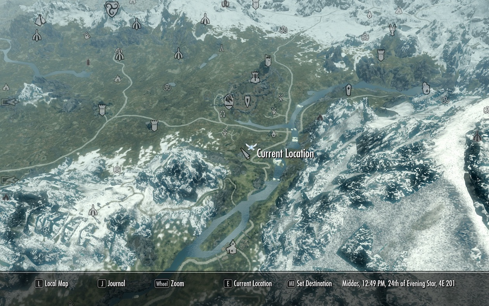

Data Quest 2020
My Project

GANs
First introduced by Ian Goodfellow et al. in 2014, GANs are a fairly recent development in Computer Science. The specific architecture I will be using for my model is StyleGAN, developed by NVIDIA. You can see an example of StyleGAN at thispersondoesnotexist.com. I aim to use this architecture (or variant of it) on my satellite image and elevation datasets. This is an
Progress
Having submitted my proposal, I am now starting development. All progress will be tracked on my GitHub. My proposal is available here as an example of my writing ability. Should you read it, please note that some sections may seem a bit odd (such as BCS criteria and hardware requirements). These were essential parts in our marking scheme but make less sense out of context.